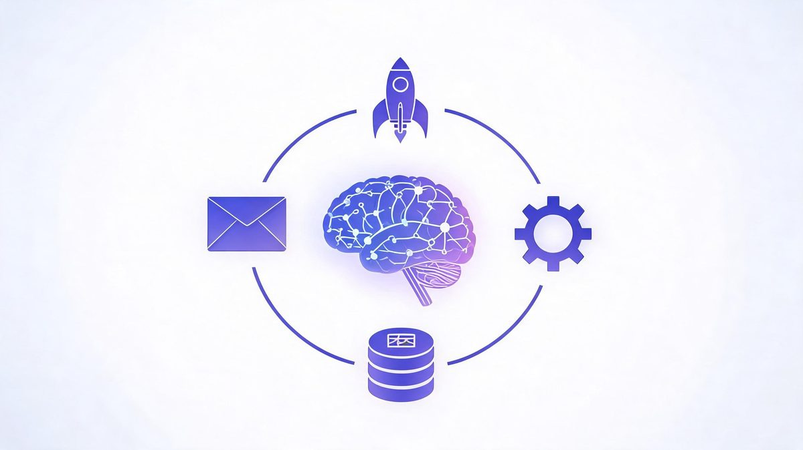
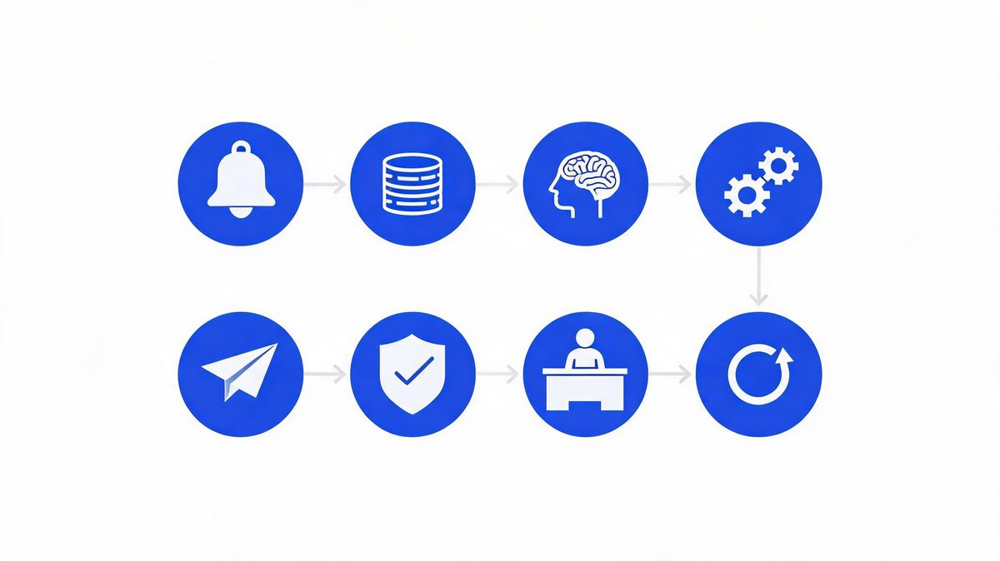
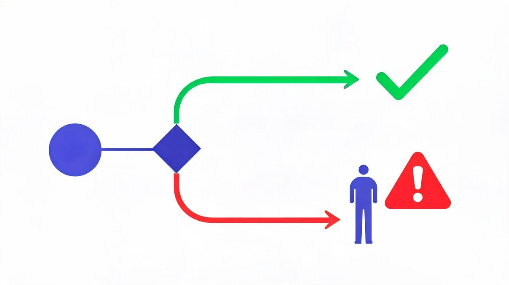
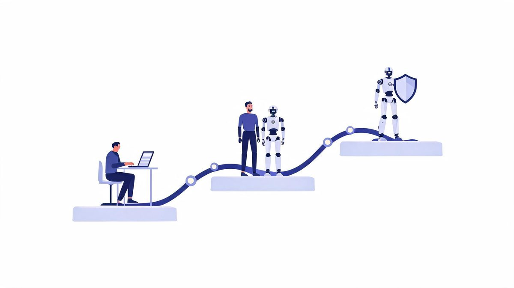

AI Agent Workflow Automation: How Autonomous Workflows Run

Most "automated" workflows break the first time reality shows up — a malformed form, an API timeout, a customer who types something unexpected. The AI workflow automation market will grow from $10.8 billion in 2026 to $97.9 billion by 2036 (Meticulous Research), but the teams that capture that value design for the exception, not the demo.
Quick answer: AI agent workflow automation is the practice of connecting an AI agent to your business systems so a repeating chain runs on its own: trigger → context → decision → action → verification. Unlike rule-based automation (if X, always do Y), the agent reads context, handles exceptions, and adapts — inside permission scopes and approval thresholds you define.
Key takeaway: Automated AI workflows succeed on boring design: a measurable trigger, scoped data access, a verification step before anything customer-facing, and an exception path that routes uncertainty to humans. The market ($10.8B growing to $97.9B by 2036) rewards teams that automate one workflow at a time — and punishes the 88% who skip the plumbing (IDC).
TL;DR:
- The chain is always the same: trigger → context → decision → action → verification → approval → next action. Master it once, reuse it everywhere.
- Exception paths decide success. Teams automate the happy path and stall when reality deviates; design the "agent is unsure" route first.
- Tools split three ways: no-code (Zapier, Copilot Studio), code-first (LangChain, n8n), and vendor-native (Agentforce) — pick by where your data lives.
- Autonomy is earned in stages: manual → assisted → autonomous, with weekly exception-log reviews gating each expansion.
Table of Contents
What Is AI Agent Workflow Automation?
AI agent workflow automation is the practice of connecting an AI agent to business systems so a multi-step chain — trigger, context, decision, action, verification — runs repeatedly without a human starting each step. The phrase sounds abstract until you separate it from its ancestor. Traditional automation follows fixed rules: a form arrives, a webhook fires, a template email sends. Every case identical, every exception a crash. Agent automation adds judgment in the middle: the agent reads the input, decides which path applies, and adapts when reality deviates.

How does AI agent workflow automation work?
How does AI agent workflow automation work? AI agent workflow automation is the execution of a repeating chain: a trigger starts the run, the agent gathers context from connected systems, decides a plan, executes actions through tools and APIs, and verifies results before continuing.
According to Gartner's 2026 forecast, worldwide AI spending will reach $2.595 trillion, up 47% year over year (Sources: Gartner, 2026). IDC research sets the stakes: 88% of AI agent pilots never reach production, blocked by integration and reliability rather than model quality (Sources: IDC, 2026).
For example, teams using Microsoft Copilot Studio or n8n run refund workflows overnight: the agent reads 40 flagged orders, approves 34 against policy, drafts 6 edge cases for review, and logs every decision. We found the model only owns the decision stage.
First, map the chain on paper before touching any tool. Second, instrument a baseline in hours and errors. Finally, automate the version that already works manually.
The 8-Stage Anatomy of an Automated Workflow
What are the stages of an AI agent workflow?
What are the stages of an AI agent workflow? Eight, and each one is a configuration decision you own: trigger, context gathering, reasoning, tool selection, action execution, verification, human approval, and the next action. According to IDC research, 88% of AI agent pilots never reach production because teams treat the chain as a demo rather than infrastructure (Sources: IDC, 2026). For example, a lead-qualification workflow configured in Zapier or Microsoft Copilot Studio defines all eight stages explicitly — which event fires the trigger, which fields the agent may read, what happens on a timeout, who approves discounts above 15%. We found the stages teams skip (verification, approval thresholds) are exactly where the failed pilots died. First, document all eight stages for your workflow in plain language. Second, assign an owner to each stage. Finally, test the chain with deliberately bad input before trusting good input.
| Stage | What Happens | Your Configuration |
|---|---|---|
| 1. Trigger | Event or schedule starts the run | Event source, filters, schedule |
| 2. Context | Agent reads relevant data | API scopes, databases, retrieval limits |
| 3. Reasoning | Model decides the plan | Model choice, instructions, guardrails |
| 4. Tool selection | Agent picks which tools to call | Available tools, fallback order |
| 5. Action | Execution via APIs | Write permissions, rate limits |
| 6. Verification | Output checked against rules | Schema validation, business rules |
| 7. Approval | Human reviews flagged actions | Thresholds, escalation paths |
| 8. Next action | Chain continues or closes | Loop rules, completion states |
Happy Path vs Exception Path
What is an exception path in automated workflows?
What is an exception path in automated workflows? An exception path is the pre-designed route an automated workflow takes when the agent is unsure, an API fails, or input falls outside expected ranges: pause, log the issue with full context, and route the run to a human.
According to MIT-affiliated research reviewed by Tricentis, 95% of generative AI pilots failed to deliver measurable ROI, and unhandled exceptions are a primary reason (Sources: MIT via Tricentis, 2026). IDC counts 88% of agent pilots never reaching production for related integration reasons (Sources: IDC, 2026).
For example, teams using Zapier route mismatched purchase orders to an accountant with the document pre-attached, while naive versions email the wrong vendor at 3 AM. We found exception design separates automation that compounds from automation that creates 2 AM pages.
First, list every way the input can be wrong, because customers are creative. Second, define the fallback for each: retry, queue, or human. Finally, review exception logs weekly for the first month.

The exception-path rule: if you have not written down what happens when the agent is wrong, you have not designed a workflow — you have designed a demo. Every automated chain needs three documented exits: retry with backoff, queue for human review, and a kill switch that stops the run entirely.
Tools: No-Code, Code-First, or Vendor-Native?
What tools are used for AI agent workflow automation?
What tools are used for AI agent workflow automation? The 2026 landscape splits into three camps, and the right pick follows your data, not the feature grid: no-code platforms like Zapier AI Agents and Microsoft Copilot Studio suit teams living in SaaS tools, code-first platforms like LangChain and n8n with AI nodes suit engineering teams needing custom logic, and vendor-native options like Salesforce Agentforce suit CRM-centric operations. According to the market research, the AI workflow automation market is valued at $10.8 billion in 2026 and projected to reach $97.9 billion by 2036 (Sources: Meticulous Research, 2026), with all three camps growing. For example, a five-person company running on Google Workspace ships a support workflow in Zapier in days, while a bank with compliance requirements builds the same logic in n8n behind its own firewall. We found the switching cost between platforms is real enough to treat the first pick as a six-month commitment. First, inventory where your data already lives. Second, match the platform to your team's coding depth. Finally, price your expected volume on each before committing, because per-task pricing diverges fast at scale.
Monitoring and Kill Switches
How do you monitor AI agent workflows?
How do you monitor AI agent workflows? Monitoring AI agent workflows is the practice of tracking three layers: operational metrics for run health (success rate, latency, retries), business metrics for value (hours saved, errors prevented), and safety metrics for behavior (actions blocked, approvals requested, exceptions by type).
According to IDC's production analysis, the pilots that survive are instrumented before launch rather than after the first incident, and 88% of pilots that skipped instrumentation never reached production (Sources: IDC, 2026). For example, teams using Microsoft Copilot Studio or n8n track deflection rate weekly and pull the kill switch when exception volume doubles, a signal something upstream changed. We found 62% of organizations now experiment with agents (Sources: Zscaler, 2026), which makes monitoring discipline the scaling differentiator.
First, define the one number that would make you turn the workflow off. Second, review exception logs weekly for the first month. Finally, tie every expansion of autonomy to a clean 30-day record.
The Monitoring Checklist (ship with every workflow)
- Kill switch — one command stops the run, tested before launch
- Exception log — every uncertain output captured with input context
- Approval queue — flagged actions visible with one-click approve/reject
- Baseline tracker — the pre-automation hours/errors, measured weekly against
- Volume alarm — alert when exception rate doubles week-over-week
The Build Roadmap: Manual → Assisted → Autonomous
How do you build an automated AI workflow step by step?
How do you build an automated AI workflow step by step? In three stages that earn autonomy with evidence: manual (human does the task while documenting every step and decision), assisted (agent drafts, human approves everything), and autonomous (agent acts within scopes, humans handle exceptions). According to the adoption data, 62% of organizations are experimenting with agents while 23% have reached broader deployment (Sources: Zscaler, 2026), and the 23% almost always passed through the same sequence. For example, an operations team automating purchase orders first logs every manual decision for two weeks, then lets the agent draft orders with mandatory approval, then removes approval for orders under $500 after a clean month. We found skipping stages is the fastest route into IDC's 88%: autonomy without evidence is a gamble the business always loses eventually. First, run the workflow manually and write down the decision rules. Second, automate with full approval for two to four weeks. Finally, narrow the approval queue to edge cases as the audit log earns it.

Costs and Measurement
The honest budget has three lines, and only one is visible upfront. Platform costs are the visible line: no-code tools run roughly $20-$100 per month per workflow, custom builds run $12,500-$100,000, and enterprise platforms negotiate annual contracts. Integration costs are the hidden line: scoped API development, permission design, and exception handling routinely exceed the platform fee — this is where IDC's 88% died. Measurement costs are the skipped line: someone has to own the baseline and the weekly review, or value stays unprovable and Gartner's 40% cancellation statistic collects another entry. According to Gartner's 2026 forecast, the $2.595 trillion flowing into AI punishes unmeasured projects first (Sources: Gartner, 2026). For example, teams using Zapier or n8n can price per-task at their actual volume in an afternoon — do that math before the vendor call, not after. We found the workflows that survive are the ones whose owners can state, in one sentence, how many hours per week the workflow saves and what evidence backs the number.
FAQs
How does AI agent workflow automation work?
As a repeating chain: trigger, context gathering, decision, action, verification. The agent reads the input, decides which steps apply, executes through connected tools, and checks results — continuing until the goal is met or an exception routes the run to a human. Unlike rule-based automation, the chain adapts when inputs change.
What is the difference between workflow automation and AI agent automation?
Traditional automation follows fixed rules: if X, always do Y. Agent automation adds judgment: the agent reads context, decides which steps apply, and handles exceptions. Practically, the agent often sits inside a traditional workflow as the decision-making step that rules could never handle.
What tools are used for AI agent workflow automation?
Three camps: no-code platforms (Zapier AI Agents, Microsoft Copilot Studio) for SaaS-based teams, code-first platforms (LangChain, n8n with AI nodes) for engineering teams, and vendor-native options (Salesforce Agentforce) for CRM-centric operations. Pick by where your data lives and your team's coding depth.
How much does AI workflow automation cost?
From about $20-$100 per month for no-code SaaS to $12,500-$100,000+ for custom builds, plus integration engineering for agent-grade workflows. IDC attributes most failed pilots to underestimating exactly that integration work, so budget the plumbing before the platform.
What is an exception path in automated workflows?
The pre-designed route for when the agent is unsure or an API fails: pause, log with full context, route to a human. Teams that skip exception design account for most stalled automations — the happy path is easy, the exception path is the engineering.
How do you monitor AI agent workflows?
Three layers: operational (success rate, latency, retries), business (hours saved, errors prevented), and safety (blocked actions, approvals requested, exceptions by type). Review exception logs weekly for the first month, and define the one number that would make you pull the kill switch.
The Bottom Line
AI agent workflow automation is not a product you buy — it is a chain you design, an exception path you document, and an autonomy level you earn. The market numbers ($10.8B growing to $97.9B by 2036) describe the teams doing this properly, and the failure statistics (88% never reaching production) describe everyone else. The pattern that works is almost embarrassingly boring: pick one workflow with a measurable baseline, run the eight-stage chain on paper, ship with human approval on everything expensive, review the exception log weekly, and expand only when the audit log earns it. When you are ready to connect the agent to your systems, the AI agent integration pillar guide covers the permissions and plumbing in depth — and if you are still deciding whether the job needs an agent at all, the AI agents vs chatbots breakdown settles it with a four-question test. Automate one thing properly this month. The compounding starts there.
Sources
- Meticulous Research — AI workflow automation market: $10.8B (2026) to $97.9B (2036)
- Gartner — AI spending forecast $2.595 trillion (+47% YoY), 2026
- IDC — 88% of AI agent pilots never reach production, via Institute PM analysis, 2026
- MIT-affiliated research via Tricentis — 95% of generative AI pilots failed to deliver measurable ROI, 2026
- Zscaler Digital Experience Predictions 2026 — 62% experimenting, 23% broader deployment
- McKinsey March 2026 survey — only 28% pursuing fundamental workflow rewiring
- Platform documentation: Zapier AI Agents, Microsoft Copilot Studio, n8n, LangChain, Salesforce Agentforce, 2026